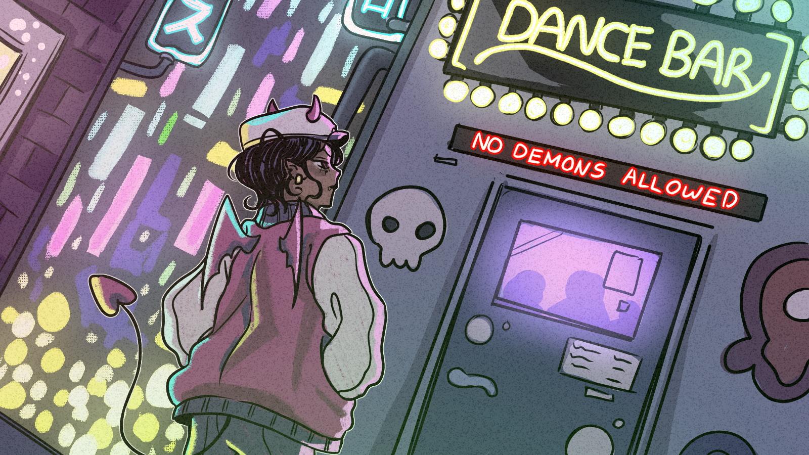
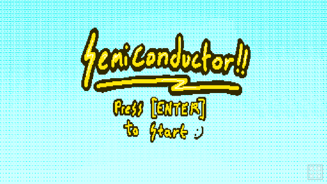
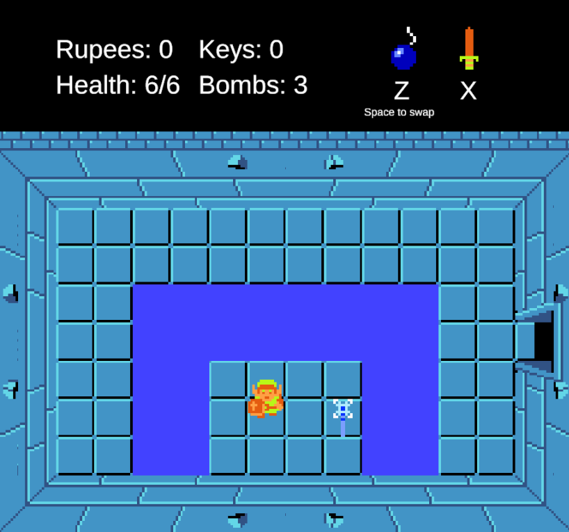
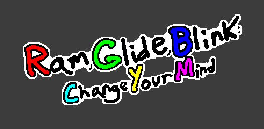
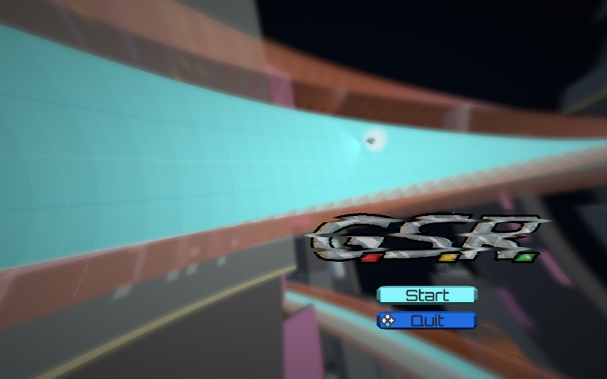
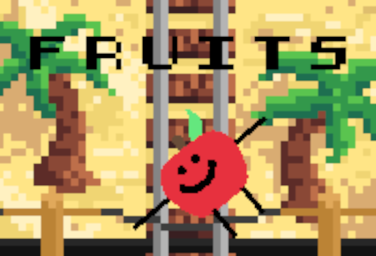

Throughout my career as a student at the University of Michigan, I have worked on a variety of game development projects such as:
|
 Demon Dance |
A rhythm game inspired by games such as Dance Dance Revolution and Friday Night Funkin' created for the Wolverinesoft Mega Jam in October 2023. My primary contributions to this project was programming and implementing the UI elements. |
|
 Semiconductor |
A rhythm game created for the WolverineSoft Shammy Jam 2024. For this game, I handled most of the programming for the project, primarily excluding programming for the title and credits screens. |
|
 The Legend of Zelda (recreation) |
A recreation of The Legend of Zelda for the NES, created in the span of 3 weeks with a partner for the game development course EECS 494. In addition to recreating the first dungeon of the game, we were tasked with creating something new in the game and a mini dungeon to go along with it. For this, we created a simple ice wand which can freeze water to form paths as well as enemies. For my contibutions, I primarily handled:
|
|
 Ram, Glide, Blink: Change Your Mind |
A relatively simple puzzle platformer based on using colors as powerups, as well as being able to combine them to form new powerups. created as the second project for EECS 494. The project was to create any game of our choosing in the span of 2 weeks. I worked on this alone, and as such I programmed and created every part of the project including all assets. |
|
 G.S.R.Note: requires 2 controllers to play |
The third and final project for EECS 494, created in a group of 5. At our classwide showcase, it placed 4th overall. It is a racing game inspired primarily by games in the F-Zero franchise, but with much more of a focus on combat compared to other games in the franchise and genre overall. My primary tasks when it came to the project were:
A trailer for the project can be found here: |
|
 Fruits |
A shoot-em-up game created for the WolverineSoft 2025 Global Game Jam. My work was primarily programming the logic behind how enemies shoot their bullets. |